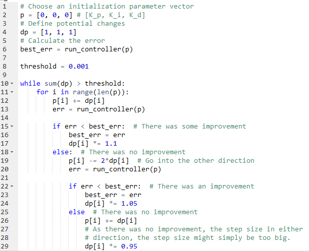
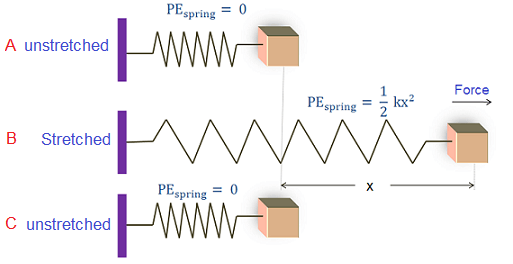
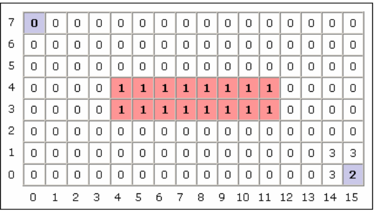
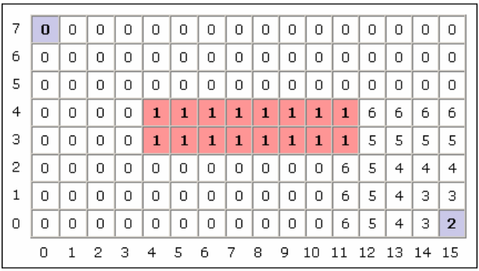
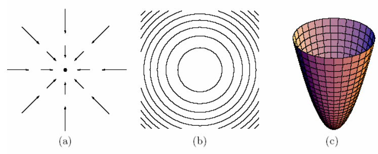
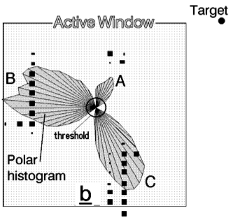
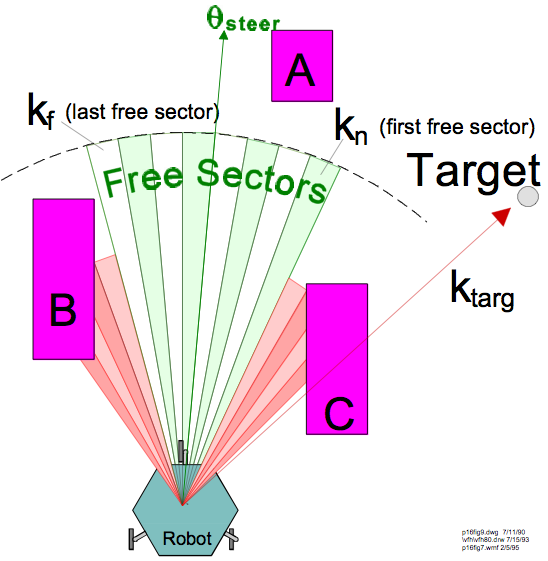

Main Motivation


Q: How do you control the robot to reach the goal state while avoiding the obstacle?
Assume omnidirectional robot.
Main question: what are the controls that will take the system from state A to B?
You have to control the
angular velocity


cross-track error at time t = e(t)
What’s wrong with this?

Will the car reach the target line?
Will the car overshoot the target line?
Is the asymptotic (steady-state) error zero?


Will the car reach the target line? YES
Will the car overshoot the target line? YES
Is the asymptotic (steady-state) error zero? NO


Need to reduce turning rate well before the line is approached
Idea: have a small proportional gain
Problem: that means the car doesn’t turn very much
Idea: need to predict the error in the near future
This is good, as long as the error does not oscillate at a very high
frequency


How do we set the gains?
What if there are systematic errors/biases?
What if the error estimate is very noisy?


What happens if the control variable reaches the actuator’s limits?
I.e. the car can’t turn as fast as the controller commands it.
Actuator may remain at its limit for a long time while the controller modifies its commands
Error increases, integral term winds up while controller goes back to issuing commands in the feasible region.

Perhaps the most widely used controller in industry and robotics.
Perhaps the easiest to code.
You will also see it as:



See Sebastian Thrun’s online class
“AI for robotics” on Udacity for more
details on this. He calls the algorithm
Twiddle and it is in Lesson 5.
Other names for this are
“Self-tuning PID controllers”


Q: How do you control the robot to reach the goal state while avoiding the obstacle?
Q: How do you control the robot to reach the goal state while avoiding the obstacle?
Assume omnidirectional robot.



In both cases we have conversion from kinetic energy to potential energy U(x).
In both cases there is a force resulting from the potential field, and F(x)=-dU(x)/dx.
This is a general rule for conservative systems with no external forces.


Q: How do you control the robot to reach the goal state while avoiding the obstacle?


Q: How do you control the robot to reach the goal state while avoiding the obstacle?
A: Place a repulsive potential field around obstacles


Q: How do you control the robot to reach the goal state while avoiding the obstacle?
A: Place a repulsive potential field around obstacles


Q: How do you control the robot to reach the goal state while avoiding the obstacle?
A: Place a repulsive potential field around obstacles
and an attractive potential field around the goal






Q1: How do we reach the goal state
from an arbitrary state?
Q2: In this example there is an unambiguous way
to reach the goal from any state. Is this true in
general?

Make the robot move by applying forces resulting from potential fields



Attractive force makes state x go to the bottom
of the potential energy bowl. Bottom=Goal = low-energy state.
Make the robot move by applying forces resulting from potential fields


Attractive force makes state x go to the bottom
of the potential energy bowl. Bottom=Goal = low-energy state.
Move the robot using F=ma, for m=1:

Gradient descent down the potential bowl
Make the robot move by applying forces resulting from potential fields


Attractive force makes state x go to the bottom
of the potential energy bowl. Bottom=Goal = low-energy state.
Q: Do you see any problems with this potential energy and force if x is far away from goal?
Make the robot move by applying forces resulting from potential fields


Attractive force makes state x go to the bottom
of the potential energy bowl. Bottom=Goal = low-energy state.
Q: Do you see any potential problems with this if x is far away from goal?
A: The farther the robot is the stronger the force. May need to normalize the force vector. Alternatively:


Make the robot move by applying forces resulting from potential fields


Repulsive force makes state x go away from the obstacle
to lower potential energy states. Free space = {low-energy states}

Move the robot using F=ma, for m=1:

Gradient descent until obstacle is cleared
Potential energy

results in forces

makes robot accelerate

Advantages of potential fields:
Can handle moving obstacles
Fast and easy to compute
Fairly reactive
Potential energy

results in forces
Q: What’s a possible problem
with addition of forces?

makes robot accelerate


What’s the total potential here?


What’s the total potential here?
It’s zero. The repulsive force is exactly the opposite
of the attractive force (assuming alpha = beta)

Problem: gradient descent gets stuck
States of zero total force correspond to local minima in the potential function:

You start/end up here
States of zero total force correspond to local minima in the potential function:

Problem: If you end up here gradient descent
can’t help you. All local moves seem
identical in terms of value local min
States of zero total force correspond to local minima in the potential function:
Solution #1: Do random move in case
it helps you get unstuck.
Problem: If you end up here gradient descent
can’t help you. All local moves seem
identical in terms of value local min
States of zero total force correspond to local minima in the potential function:
Solution #2: back up and get out from
the dead end, just like you entered it.
Problem: If you end up here gradient descent
can’t help you. All local moves seem
identical in terms of value local min
Potential energy function with a single global minimum at the goal, and no local minima.
For any state x there exists a neighboring state x’ such that .


So far not used in practice very much because they are usually
as hard to compute as a planned path from the current
state to the goal.



High risk for cells with high probability of being occupied.
Risk inversely proportional to distance.



Local, reactive controller
Sample a set of controls for x,y,theta
Simulate where each control is going to take the robot
Eliminate those that lead to collisions.
Reward those that agree with a navigation plan.
Reward high-speeds
Reward proximity to goal.
Pick control with highest score that doesn’t lead to collision.